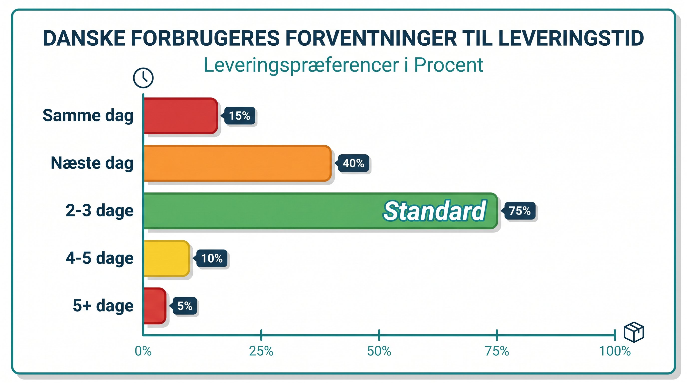

For ti år siden var tre til fem hverdages leveringstid acceptabelt for de fleste danske netkøbere. I dag er det en kurv-killer. Forventningerne til leveringshastighed er steget dramatisk, drevet af Amazon Prime og de store platformsplayers der har laert forbrugerne at levering næste dag er normalt, ikke ekstraordinaert.
Leveringstid er ikke laengere bare et logistikspørgsmål. Det er et konverteringsparameter på linje med pris og produktkvalitet. Og det er et loyalitetsparameter: kunder der får varen hurtigt, genkøber hurtigere og klager sjaldnere.
Her gennemgår vi hvad danske kunder forventer i 2026, hvad forsinkelse koster dig i konkret salg, og hvad du kan gøre for at bruge leveringstid som et aktivt salgsargument.
👉 SmartPack hjælper dig med at effektivisere lagerprocesserne saa du kan loeve hurtigere leveringstider. Se hvordan
Hvad danske kunder forventer i 2026
Forventningerne varierer efter produktkategori og leveringsform, men hovedbildedet er klart:
- Pakkeshop-levering: 1-2 hverdage er forventningen for de fleste kategorier. Tre hverdage accepteres, men opleves som langsomt. Mere end tre hverdage oger kurv-opgivelsen markant.
- Hjemlevering: 1-2 hverdage ved bestilling foer kl. 14-16 er ved at blive standarden. Same-day eksisterer i de største byer men er fortsat et premiumtilbud.
- Ekspreslevering: Kunder forventer at kunne vælge et hurtigere alternativ mod merbetaling. Tilbyder du det ikke, mister du ordrer til dem der gør det.
Bemairk: forventningerne er højere på mobil end på desktop. Mobilshopping er ofta impulsdrevet, og impulskøberen er kortmodig. En lang leveringstid på en mobilside koster dig uforholdsmassigt mange salg.
Hvad sen levering koster dig
Konsekvenserne af langsom levering er konkrete og maalbare:
| Konsekvens | Effekt |
|---|---|
| Kurv-opgivelse ved leveringstid over 3 dage | +18-30% opgivelse |
| Kundeservice-kontakter om ordrestatus | 3-8x mere end ved hurtig levering |
| Genkøbsrate inden for 90 dage | 25-40% lavere ved langsom levering |
| Negativ reviews nævner leveringstid | 40-60% af 1-2 stjerner nævner levering |
Det er ikke smaatal. Og det interessante er, at problemet starter laengere inde i kaedet end de fleste tror. Det er ikke altid fragtfirmaet der er flaskehalsen. Meget ofte er det behandlingstiden på lageret, dem der packer ordrerne, der er årsagen til at pakken forlader dit lager for sent.
Kend forskel på lovet og faktisk leveringstid
Et kritisk punkt mange webshops overser: der er forskel på den leveringstid du lover på hjemmesiden og den leveringstid kunden faktisk oplever.
Din webshop siger maaskle "1-2 hverdage". Men hvis din ordre-til-afsendelse-tid er 18 timer på et travlt tidspunkt, og du kun sender med en bestemt fragtpartner som ikke haenter hver dag, kan kunden i praksis vente 3-4 dage. Det er et tillidsbrud der koster dig anmeldelserne og genkøbene.
Maael din reelle ordre-til-levering-tid, ikke den du haaber på. Del den op i: behandlingstid på lager + transit-tid. Optimer behandlingstiden først, fordi det er den del du kontrollerer fuld ud.
Sådan bruger du leveringstid aktivt i salget
Leveringstid skal ikke gemmes på en fragtside. Den skal være synlig på produktsiden, i kurven og i checkout. Her er de konkrete tiltag der virker:
- Vis bestillingsskaareskår på produktsiden. "Bestil inden kl. 14 og faa den leveret i morgen" er et af de mest effektive konverteringselementer i eCommerce. Det skaber urgency og tryghed på een gang.
- Nedtaellingstimer til cutoff. En live-timer der viser "Bestil inden 2 timer og 14 minutter" konverterer bedre end en statisk tekst. Det er dokumenteret i tvaers af kategorier.
- Vaerforskellighed leveringsmetoder. Giv kunden valget: gratis pakkeshop om 2 dage, hjemlevering i morgen for 49 kr. Kunden vaerdsætter valget og du får signal om hvad de prioriterer.
- Ordrebekraeftelse med konkret leveringsdato. Ikke "3-5 hverdage". En konkret dato: "Din ordre forventes leveret tirsdag den 6. maj." Det reducerer "hvor er min pakke?"-henvendelser med 40-60%.
Leveringstid starter på lageret
Du kan ikke love hurtig levering hvis dit lager ikke kan levere ordrer hurtigt nok. Cutoff kl. 14 kræver at du kan plukke, pakke og gøre ordrer klar til afsendelse fra morgenstunden og frem til cutoff. Det kræver effektive processer, klare arbejdsgange og ideelt et system der prioriterer dagens ordrer automatisk.
De webshops der klarer sig bedst på leveringstid kombinerer to ting: en fragtpartner med hurtig transit og et lager der kan håndtere ordrer med minimal behandlingstid. SmartPack hjælper med den del du kontrollerer: behandlingstiden fra ordre modtaget til pakke klar.